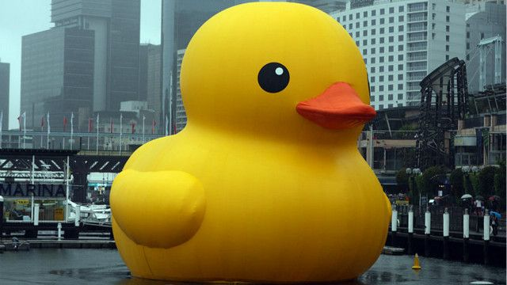

O começo de tudo, e a primeira aparição de Mestre Pato
O que é?
Tudo começou quando o Império dos Patos estava passando por um período de trevas e escuridão, onde os patos estavão sendo dominados pelo Gansos, e então dos céus surgiu ele, o grande Mestre Pato, e com um QUACK super poderoso afugentou os Gansos.
Como funciona?
Com a revolução e o avanço do patolicismo, nós iremos trazer paz e harmonia a todos, dando um fim aos Gansos, essa raça que ja causou e causa tanta discordia e distruição por onde passam.